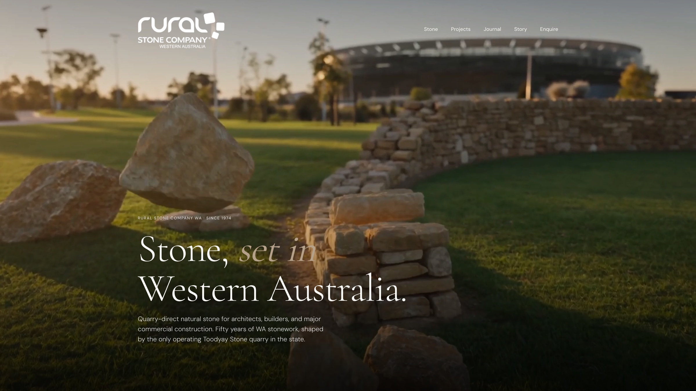
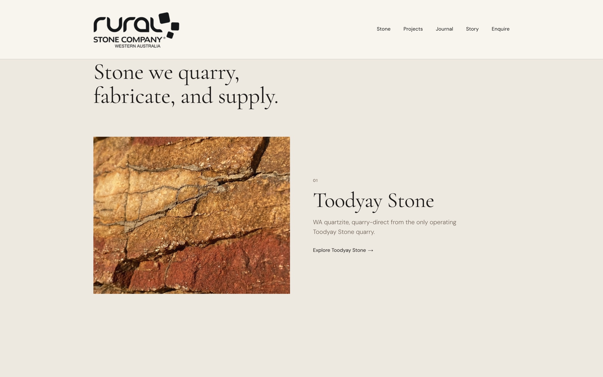
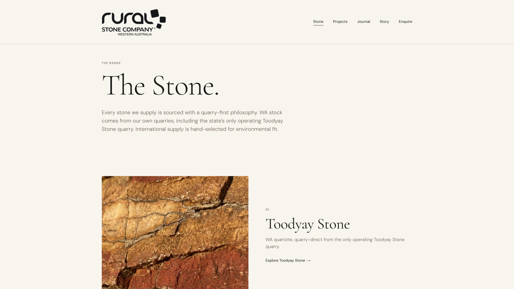
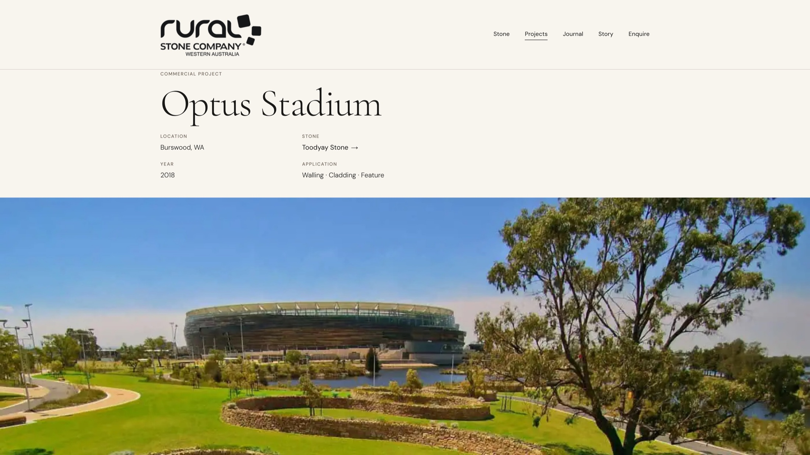
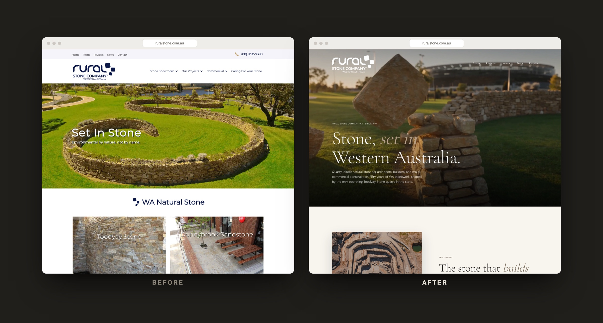

Rural Stone WA.
A fifty year old WA quarry with fifty years of substance, and a digital presence that gave away none of it.

The product was never the problem.
Rural Stone WA has been quarrying stone in Western Australia for fifty years. The stone is premium. The work is real. Drive past a landmark build in Perth and there is a fair chance the natural stone came out of their ground.
The problem was that nobody speccing that product could find them. An architect designing a commercial facade, a builder pricing a natural stone install, a developer comparing suppliers. These people search, and they trust what reads as credible. Rural Stone had fifty years of substance and a digital presence that gave away none of it.
Not a refresh. A reposition.
Move Rural Stone from unknown local supplier to premium B2B partner. Make the business legible to the people with budgets: architects, commercial builders, and established trades.
Three things had to be true at launch. The site had to look like the work deserved. It had to be found in search. And it had to function as a system, not a brochure.
Position first, pixels second.
Editorial first. The site is built to be read, not skimmed. Typography, pacing, and restraint do the work that stock photography and loud claims usually try to do and fail.
B2B first. Every page assumes the reader is making a specification or procurement decision. The catalogue, the project pages, and the calls to action all serve that one reader.
Search architected from the ground up. The structure of the site is the SEO strategy. Stone names, project types, and location terms are mapped to real pages, so the searches buyers already make have somewhere to land.

Typography set to be read, not skimmed.
An editorial surface, a real system.
The site is a custom Next.js editorial build with a headless CMS behind it, so the team can grow the catalogue and add projects without touching code. Underneath the surface is a system that does one job: turn a search into an enquiry.
- iA stone catalogue that runs through to individual detail pages. One per product, each with the specifics a specifier needs.
- iiTwenty two project pages, each one a real install. An architect can see the actual job, the stone used, and the context it sits in.
- iiiFull SEO architecture. Schema, clean URL structure, canonical handling, and metadata mapped to the terms buyers search.

The Stone. A catalogue organised quarry-first, wired through to detail pages.

Optus Stadium. One of twenty two project pages, each a real install.

Before and after. The same business, repositioned.
Built to be the result they find.
The reposition shipped as a complete system. A custom editorial site, a stone catalogue wired through to detail pages, and twenty two project pages, each one a real install an architect can point a client to.
The whole structure is architected to own the searches their buyers already make. Toodyay Stone. Donnybrook Sandstone. Commercial natural stone in Perth. The page structure maps directly to those terms, so the right enquiry finally has somewhere to land.
The value was in the fifty years.
The temptation with a business like Rural Stone is to make it look new. That would have been the wrong move. The value was always in the fifty years, the ground, and the product. The work was to clear away everything that hid it, and to point it at the right reader.
Rural Stone runs the only operating Toodyay Stone quarry in Western Australia. Now the site says so, to the people who needed to hear it.
[ Client quote. One or two sentences from the Rural Stone owner, on the difference in the kind of enquiry they now receive. ]